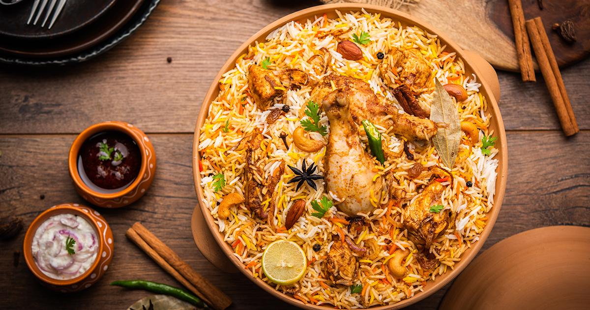

Paav Bhaji
Along with Vada Pav, Paav Bhaji is also another popular street food item that can be found in Aurangabad very easily. The pav or bread is served with bhaji, which is made with mashed vegetables and tastes quite spicy, which makes the dish so yummy that you cannot just stop eating.

Eating Biryani
Biryani is perhaps one of Aurangabad's most famous non-veg foods that can be found in almost all the restaurants of Aurangabad. You can opt for any kind of variant when it comes to Biryani, and one of the most popular places to have this dish is The Biryani Life, where you can either enjoy a dining experience or order online.